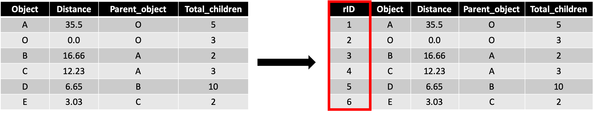

Headlines
Data pre–processing
Our solution only accept comma separated CSV file as input. The csv file should have following properties:
-
Column name: The first row should contain the column name. Do not place space with in a column name. Try to avoid long name and use meaningful name.
-
First column: The first column should be a row index column. If the data set does not contain any row index column then add this column. This column should be the very first column. 
-
Cleanup: Follow standard data imputation techniques for missing data.
Setup and installation
At first download the software from here. You also need to complete following steps before installing the software in your machine.
- Check your current GCC version, we need GCC at least 5.0
- Download boost library and install it. (Mac users: please do not use homebrew or Macport to install this library.)